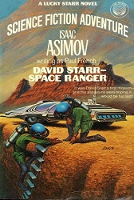
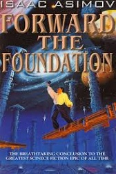
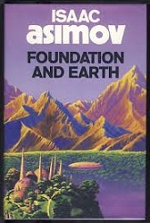
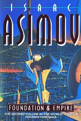

Science Fiction Peices By Isaac Asimov In Alphabetical Order:
C
The Caves of Steel

The Currents of Space

D
David Starr, Space Ranger

E
The End of Eternity

F
Fantastic Voyage II: Destination Brain


Forward the Foundation

Foundation

Foundation and Earth

Foundation and Empire

Foundation's Edge
G
L
- Lucky Starr and the Big Sun of Mercury
- Lucky Starr and the Moons of Jupiter
- Lucky Starr and the Oceans of Venus
- Lucky Starr and the Pirates of the Asteroids
- Lucky Starr and the Rings of Saturn
- Lucky Starr series
N
- The Naked Sun
- Nemesis
- Nightfall
- Norby, the Mixed-Up Robot
P
- Pebble in the Sky
- The Positronic Man
- Prelude to Foundation
R
- Robots and Empire
- The Robots of Dawn
S
- Second Foundation
- The Stars, Like Dust
U
The Ugly Little Boy